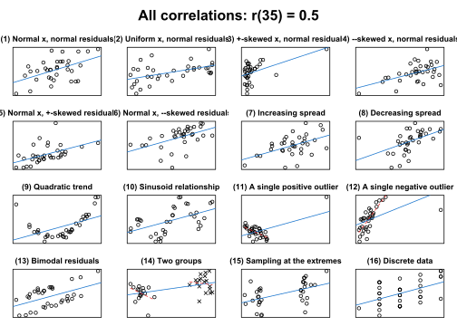

cannonball bundles a couple of functions that I use when teaching introductory courses in quantitative methodology and statistics.
Functions
# Load the package
library(cannonball)
plot_r(): Draw different scatterplots with the same correlation coefficient
A single correlation coefficient can correspond to any number of scatterplots. plot_r() produces 16 such scatterplots for any given Pearson correlation coefficient to drive this point home.
plot_r(r = 0.5, n = 35)
For more info, see ?plot_r.
Accompanying blog post: What data patterns can lie behind a correlation coefficient?
Walkthroughs
To help students see the connection between an experiment’s design and its analysis, I’ve written two functions.
walkthrough_p() guides the user through a completely randomised experiment: Data points are generated and randomly assigned to either the control or intervention condition. Then, the intervention effect is added to the data points in the intervention condition. Finally, the data are analysed using a randomisation test.
# see ?walkthrough_p
walkthrough_p(n = 18, diff = 0.3, sd = 1,)walkthrough_blocking() works similarly to walkthrough_p() but describes a randomised block design: Prior information about the data points is available in the form of a covariate (e.g., a pretest score). This information is used to group participants into ‘blocks’, and the randomisation is restricted in that one participant per block is assigned to the control and one to the intervention condition. Crucially, the analysis needs to take this restricted randomisation into account.
# ?walkthrough_blocking
walkthrough_blocking(n = 12, diff = 0.4, sd = 1)Simulate data and analysed cluster-randomised data
The data from experiments in which entire clusters of participants (e.g., classes) are assigned to the experimental conditions can’t be analysed in the same way as data from experiments in which the participants are assigned to the conditions individually. clustered_data() generates data for a cluster-randomised experiment and can be used to demonstrate the increased Type-I error rate if such data are analysed using t-tests on the individual outcomes.
Refer to the vignette (article) vignette("cluster-randomisation", package = "cannonball") for details.
Check model assumptions graphically
These functions may be helpful for helping you to judge whether your data conform to the assumptions of your statistical model. By embedding the model’s diagnostic plot in a line-up of diagnostic plots of simulated data for which the model’s assumptions are literally met, analysts can more easily determine whether any blips in these plots are indicative of assumption violations or whether they can plausibly be accounted for by sampling error/noise.
Refer to the vignette (article) vignette("check-assumptions", package = "cannonball") for details.